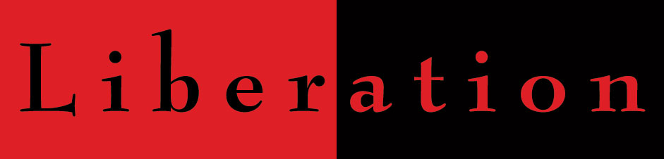

|
|
|
Browsing
Contact Us |
Campaigners |
Face to Face |
Tribune |
Interview |
News |
On the Web |
One Million |
Report
Farsi | Français | German | Italian | Spanish | العربية Also in this section
|
 Liberation, Expresses its Support for the Campaign and WHRDs Under PressureSaturday 22 December 2007 Change for Equality: Liberation, a UK-based international organization has expressed its support for the One Million Signatures Campaign and its members who are imprisoned or facing charges due to their peaceful activities in support of women’s rights. According to its website, "Liberation has for 50 years campaigned against neo-colonialism, and today resists the “new world order” of neoliberal globalisation led by the United States and EU governments." The organization aims to promote peace, economic justice, anti-racism, human rights, international solidarity, and public awareness on international economic justice and human rights. The statement issued by this organization in support of the Campaign is provided below as well as on their site:
One Million Signatures Campaign Demanding Changes to Discriminatory Laws against Women in Iran Liberation congratulates the activists in the “One Million Signatures Campaign Demanding Changes to Discriminatory Laws against Women” in Iran and supports their courageous struggle for the promotion We condemn all kinds of anti-women traditions, cultural norms and discriminatory laws and strongly support campaigns and actions in favour of people’s democratic demands. We believe the campaign of One Million Signatures Demanding Changes to Discriminatory Laws in Iran is a right and brave action by the Iranian women activists and must get international support. The women activists in this campaign should receive full protection from any kind of violation and ill-treatment and the women activists who are currently in prison must immediately be released. We believe that, by prosecuting and sentencing the women activists in this campaign and also all human rights activists, the Iranian authorities are acting against humanity and justice. They are also in breach of their international obligations, specifically the Human Rights Declaration, and the international community should not tolerate this. Iranian authorities are ill-treating and prosecuting the activists in the “Campaign for One Million Signatures” on the ground that they are acting against national security. Contrary to this view, we believe the discriminatory laws and violation of human rights in Iran supported and condoned by the authorities, will definitely increase the scale of people’s discontent and resentment and eventually cause the waves of uncontrollable uprising all over the country. Iranian authorities must by now have realised that women in Iran are competent, intelligent and committed activists and they would not tolerate inequality and cruelty any longer. The authorities in The Iranian women’s campaign for their rights and the change of law in Iran is morally, socially and politically justified and should receive international recognition and support. We pledge to win support and solidarity for this important campaign from our friends and supporters and will bring the issue to the attention of international community, specifically the British government, UN, European Parliament and human rights organisations. Please advice as to how we could give more support and help to your campaign. Maggie Bowden |